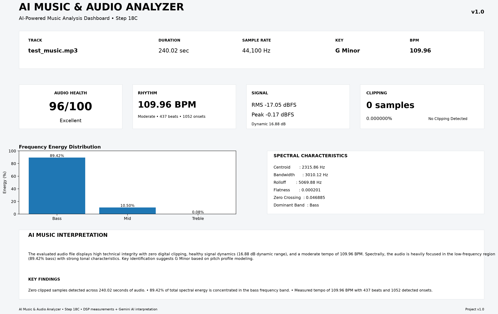

Final AI Music Analysis Report
Project-02 • Version v1.1 • Step 20
Project-specific audio quality heuristic.
| Parameter | Result |
|---|---|
| RMS Level | -17.05 dBFS |
| Peak Level | -0.17 dBFS |
| Dynamic Range | 16.88 dB |
| Crest Factor | 6.985 |
| Clipped Samples | 0 |
| Clipping Percentage | 0.000000% |
| Feature | Result |
|---|---|
| Bass | 89.42% |
| Mid | 10.50% |
| Treble | 0.08% |
| Dominant Band | Bass |
| Spectral Centroid | 2315.86 Hz |
| Spectral Bandwidth | 3010.12 Hz |
| Spectral Rolloff | 5069.88 Hz |
| Spectral Flatness | 0.000201 |
| Zero Crossing Rate | 0.046885 |
| Feature | Result |
|---|---|
| Estimated BPM | 109.96 |
| Tempo Category | Moderate |
| Detected Beats | 437 |
| Detected Onsets | 1052 |
| Feature | Result |
|---|---|
| Estimated Key | G Minor |
| Key Correlation | 0.7472 |
The integrated dashboard generated in Step 18C is included as the visual summary of the analysis.

Measured facts: 'test_music.mp3' is a monophonic (1 channel) audio file with a duration of 240.02 seconds, a sample rate of 44,100 Hz, and 10,585,088 total samples. Interpretation: The signal maintains a peak level of -0.17 dBFS and an average loudness (RMS) of -17.05 dBFS.
Measured facts: Spectral centroid is 2315.86 Hz, spectral rolloff is 5069.88 Hz, and spectral flatness is 0.000201. Technical explanation: Spectral centroid represents the 'center of mass' or perceptual brightness of the sound, while spectral flatness measures tone purity (values near zero indicate strong harmonic/tonal structure rather than noise). Interpretation: The sound profile is predominantly tonal with moderate high-frequency extension.
Measured facts: Energy distribution is 89.42% bass, 10.50% midrange, and 0.08% treble, with a dominant band classified as Bass. Spectral bandwidth is 3010.12 Hz. Interpretation: The signal exhibits a heavily bass-dominated frequency spectrum, with minimal high-frequency spectral energy.
Measured facts: Tempo is measured at 109.96 BPM (classified as Moderate), with 437 total beat detections and 1052 onset events across the track. Interpretation: The audio features a steady, moderate-paced rhythmic structure with frequent transient events.
Measured facts: The dominant pitch class is D, and the estimated musical key is G Minor with a key correlation score of 0.7472. Interpretation: The tonal content strongly correlates with G Minor. Note: The musical key is an automated estimate and should be interpreted as such.
Measured facts: Peak amplitude is -0.17 dBFS, dynamic range is 16.87 dB, crest factor is 6.99, zero clipped samples were detected (0.0%), and the calculated health score is 96 ('Excellent'). Technical explanation: Crest factor measures the ratio between peak and average (RMS) levels, indicating signal dynamics. Interpretation: The audio signal maintains clear dynamic headroom without digital clipping. Note: The project health score is an internal quality heuristic and not an industry-standard audio measurement.
The evaluated audio file displays high technical integrity with zero digital clipping, healthy signal dynamics (16.88 dB dynamic range), and a moderate tempo of 109.96 BPM. Spectrally, the audio is heavily focused in the low-frequency region (89.42% bass) with strong tonal characteristics. Key identification suggests G Minor based on pitch profile modeling.
Measured facts confirm a 240.02-second monophonic audio file (44.1 kHz) featuring clean signal headroom with a peak level of -0.17 dBFS, a dynamic range of 16.88 dB, and zero clipped samples. Interpretation suggests high technical recording health (internal health score 96), alongside an extreme frequency bias toward low frequencies (89.42% bass) and very limited treble content (0.08%).
The signal demonstrates clean technical properties with strong dynamic range and zero digital clipping. Further technical review should focus primarily on evaluating the extreme low-frequency spectral concentration (89.42% bass) and manually confirming automated tempo and key estimates.
DSP measurements depend on the selected algorithms, sample rate, mono conversion and frequency-band definitions.
Musical key detection is an estimate based on chroma/profile correlation.
The Audio Health Score is a project-specific heuristic and is not an industry-standard audio quality metric.
AI interpretation and recommendations should be treated as analysis assistance and should be verified through appropriate listening and engineering measurements.
The AI Music & Audio Analyzer successfully processed the selected music track through a complete DSP and AI-assisted analysis pipeline. The track demonstrated:
The project has progressed from basic Bluetooth audio capture to a complete AI-assisted music analysis, recommendation and reporting workflow.
| Milestone | Status |
|---|---|
| Steps 1–17 — DSP & Music Analysis | COMPLETE |
| Step 18A — AI Feature Package | COMPLETE |
| Step 18B — AI Music Interpretation | COMPLETE |
| Step 18C — AI Dashboard | COMPLETE |
| Step 19 — AI Recommendations | COMPLETE |
| Step 20 — Final Report Generator | COMPLETE |